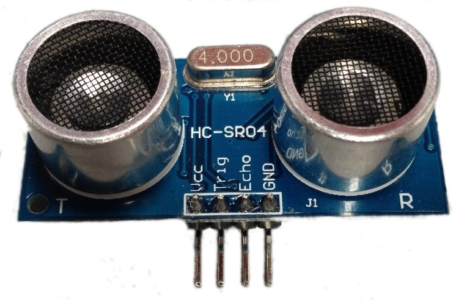
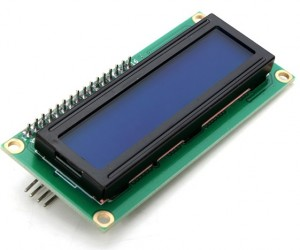

Los sensores de temperatura son componentes eléctricos y electrónicos que actúan como sensores que permiten medir la temperatura mediante señales eléctricas específicas. Dicha señal puede enviarse directamente la resistencia.
Como sugiere el nombre, los sensores ultrasónicos miden la distancia mediante el uso de ondas ultrasónicas. Los sensores ultrasónicos miden la distancia a un objeto calculando el tiempo entre la transmisión y la recepción..
Un sensor de luz es un dispositivo que trasforma la energía de la luz en radiaciones electromagnéticas o en fotones y puede percibir la variación de la iluminación en determinado lugar. la más destacable de todas es que nos permite hacer un uso mucho más eficiente de la energía que utilizamos,
Arduino actúa como un microcontrolador, cuando descarga un programa de una computadora y funciona de manera independiente, puede controlar y manejar ciertos dispositivos y tomar decisiones basadas en el programa descargado e interactuar con el mundo físico a través de sensores.
Si usted tiene alguna duda, queja o sugerencia, puede comunicarse directamente con nosotros pulsando en el botón de servicio al cliente, todos los derechos son reservados y de encontrarnos alguna página que haya copiado nuestro código, será duramente sancionada con el cierre de esta misma.